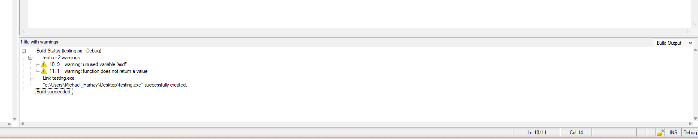
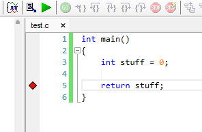

- Generated by
 1.16.1
1.16.1
|
CVI Crash Course
|
To compile a CVI project, follow these steps:

When calling C code from a TestStand sequence or some other executable, you can open the corresponding source project in CVI and select Run > Attach to Process to attach to the process. This allows the current process to be debugged using all of CVI's debug features.
Similarly, Run > Detach from Process can be used to detach an attached CVI instance. This is often useful when stepping into CVI code from TestStand, as terminating the process from CVI without detaching will halt the entire TestStand sequence.
Breakpoints can be set by navigating to Run > Breakpoints (Shift+F7), and adding a breakpoint via the resulting menu.
Alternatively, clicking within the grey space directly to the left of a line number will enable a breakpoint.

Watch expressions can be set by selecting a line of code, then selecting Run > Add Watch Expression or by pressing Shift+F9.
While executing a sequence with breakpoints, standard debugging step commands can be used. They can be found under Run; here are some of the most useful ones:
CVI features a number of windows that are useful for debugging (found under Window). Here are a few useful ones to explore: